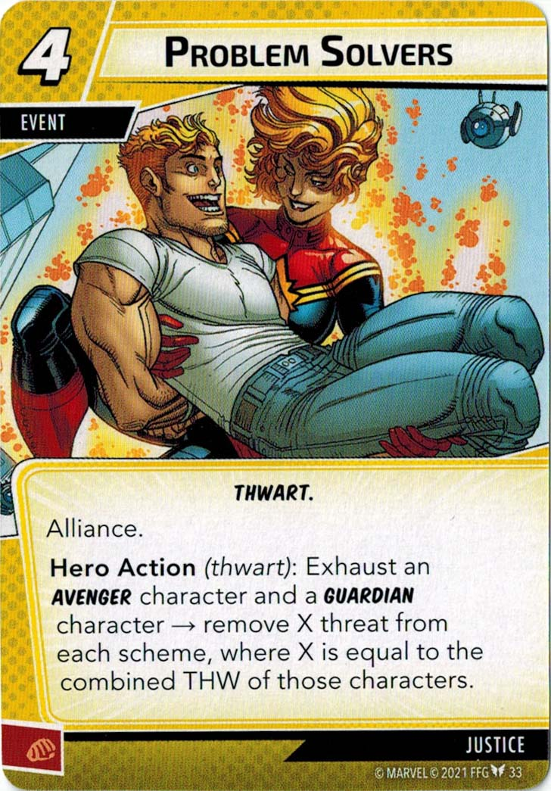

I. The Basics of Problem-Solving in a Community
Justin Leinaweaver (Spring 2026)

1) The Basics of Problem-Solving in a Community
“Politics”
“Environment”
“Policy”
Engaging with the Domestic Policy-Making Process
DOC’S KEY approach (Hughes 2007)
The Policy Process Model (Kraft 2011)
The Collaborative Approach (Clarke and Peterson 2016)
The DOC’S KEY Approach (Hughes 2007)
The Collaborative Approach (Clarke & Peterson 2016)
Engaging Productively as Problem-Solvers
Describe the problem facing our community
Investigate the relevant stakeholders
Frame the problem
Design a policy to address the problem
Take action to push the plan forward!
Ostrom (1990) ch3 on Adaptive Governance
Canvas assignment